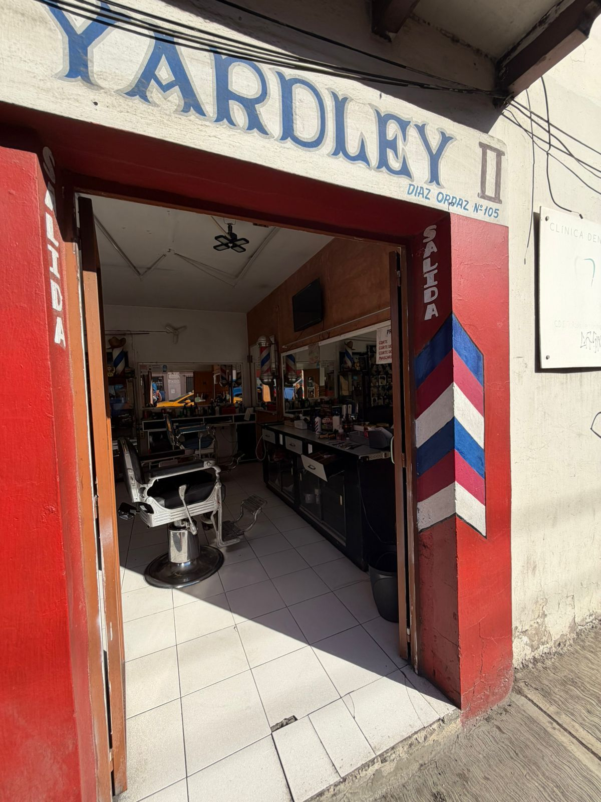
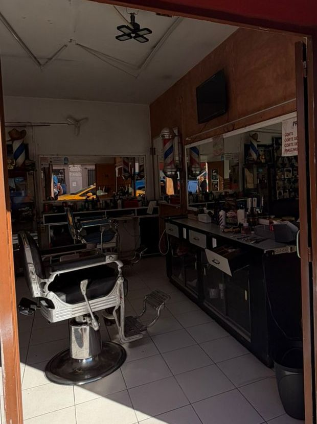

Corte clásico, como debe ser.
Barbería y peluquería de barrio en el Centro de Oaxaca. Buena plática, buena música y un corte bien hecho.
Lunes a domingo · 11:00 a 21:00
Servicios
El menú de la casa
Precios claros, sin sorpresas.

La casa
Una barbería a la antigüita
Yardley, peluquería y barbería, lleva más de seis décadas cortando el pelo en el Centro de Oaxaca. Sillones clásicos, postes de barbero y un letrero pintado a mano que ya es parte de la calle.
Aquí atiende Amado: un corte con calma, una plática amena y un poco de música. De esos lugares a los que vas una vez y ya no cambias.
Escríbele a AmadoPor qué Yardley
Lo de siempre, bien hecho
Oficio de años
Una peluquería con historia desde 1958, donde el corte se hace con tiempo y cuidado.
Trato de barrio
Aquí te conocen por tu nombre. Muchos clientes llevan años sentándose en el mismo sillón.
Precio justo
Corte desde $130 en pleno Centro. Sin paquetes raros ni letras chiquitas.
Galería
Cortes de la casa
¿Ya te cortaste en Yardley?
Tu reseña ayuda a que más gente encuentre una barbería de las de antes. Te toma un minuto.
Déjanos tu reseña en Google Se abre la ficha de Yardley en Google Maps: toca “Escribir una reseña”.Visítanos
Te esperamos en el Centro
- Dirección
- Díaz Ordaz 105, Centro, Oaxaca de Juárez
- Horario
- Lunes a domingo · 11:00 a 21:00
- Teléfono
- 951 519 7707
- Peluquería Yardley